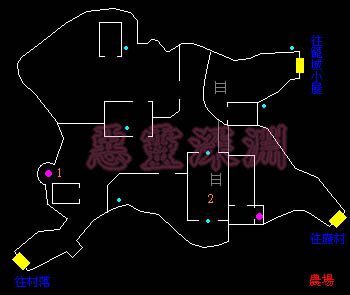
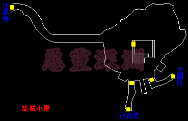

|
惡靈古堡～惡靈古堡４----地圖攻略～2-2
|
|
攻略內容以Normal為主，地圖上的紫色圓點●表示高價寶物的位置 。
2-2的起始點在編號4的房間中，想要多賺錢的玩家就回到教會大廳，有兩個持十字弓的邪教徒，其中一人有5000ptas，弓箭的傷害力 滿大的，可以試著進門後投擲閃光彈或手榴彈先發制人；或是先躲到兩側，再逐一擊倒。 墓地上重新聚集了大批村人，只要聽從Ashley的建議，射擊裝滿桶子的推車，一次解決大部分敵人。
在回程經過地下隧道時，武器商人的物品更新了。 購物指南（new）：
在手槍類的武器中，紅九手槍攻擊力是最高的，只是速度較慢。若要購買，最好連槍托一起買，可以減少80%的後座力。 購買完後可立即改造。
回到村落之後，四處都有村民和陷阱，如果擔心Ashley的安危，可以讓她待在編號5的高塔上，等到把敵人解決，且解除路上的捕獸 夾之後再一起行動。Ashley由高處下來時就算有梯子也不會爬，Leon要在下面接應才可以喔。村落的道具都重新配置了，調查完就 往農場。
 一到農場就看到前方有個紅色的鐵箱子，讓Ashley躲到裡面的話，無論如何都不會受到傷害，如此一來，Leon就能安心解決敵人。 在紅色鐵箱附近的打字機小屋中有File Luis和第三組織。 原本無法打開的往籠城小屋的門，在和Ashley通力合作之下打開了。
 路上碰到武器商人，過橋後因為有大量村民圍過來所以躲進屋子之中，恰好Luis來幫忙，第一階段，村民會從一樓的三個窗子進來 ，窗子旁邊的櫃子可以移動來暫時阻擋，但是時間一久櫃子也會被破壞，屋子內一、二樓都有一些道具，Luis也會不時給Leon彈藥 。Luis相當可靠，即使受到攻擊也不會死，所以玩家不用替他擔心；反倒是如果Luis遭到Leon攻擊，超過四次的話是會出事情的。 在第二階段，Luis會要求Leon上二樓，此時村民就會開始從二樓的窗口利用梯子爬上來，一樓的村民也會陸續攻過來，把二樓窗口 的梯子推倒爭取時間，也可避免腹背受敵。第二階段時，玩家也可以選擇待在一樓，若是待再門旁邊的角落來應戰，可比二樓安全 多了。 打倒約四十個左右的敵人後，村人們散去。本章節結束。
未經許可禁止轉載連結 |
||||||||||||||||||||||||||||||||||
惡靈深淵Biohazard Abyss http://98.to/coolbio